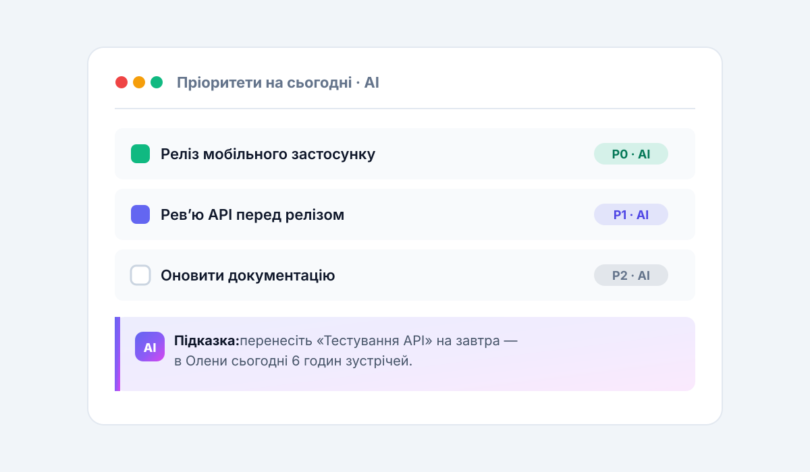

У більшості команд проблема не в кількості задач, а в порядку їх виконання. Розбираємо, як AI в TaskFlow AI оцінює дедлайни, залежності та навантаження — і щодня підказує, що робити першим.
Що враховує алгоритм
AI дивиться одразу на чотири фактори: терміновість дедлайну, кількість заблокованих задач, доступність виконавця та історичну швидкість команди. Жодна людина не тримає все це в голові одночасно.
- Дедлайни — з вагою за штрафом прострочення.
- Залежності — задачі, що блокують інших, піднімаються вище.
- Навантаження — враховуються зустрічі, відпустки та фокус-час.
- Контекст — тип задачі та хто її робить найшвидше.
Як зважується кожен фактор
Вага факторів не статична: модель перенавчається на даних вашої команди щоспринта. Якщо команда стабільно зриває задачі з великою кількістю залежностей — їхня вага зростає автоматично.
Порівняння підходів до пріоритизації
Щоб було наочно, зібрали ручне пріоритезування, класичні фреймворки та AI-підхід в одну таблицю. На вузьких екранах вона прокручується горизонтально.
| Підхід | Час на планування | Точність | Коли підходить |
|---|---|---|---|
| Ручне пріоритезування | 2–4 години на спринт | ~60% | Команди до 5 людей |
| MoSCoW / RICE | 1–2 години на спринт | ~75% | Продуктові команди зі стабільним беклогом |
| AI-пріоритизація TaskFlow | ~5 хвилин | 94% | Команди від 5 людей зі змінним навантаженням |
Як це виглядає на практиці
Щоранку команда отримує персональний топ-3. Менеджер бачить пояснення кожного рішення: «Піднято, бо блокує реліз мобільного застосунку». Це знімає 90% суперечок про пріоритети.


«AI-підказки — це магія. Він знає про мою команду більше, ніж я сам». — Андрій Мельник, VP Product, Vertex
Покроковий запуск за 10 хвилин
- Увімкніть AI-пріоритизацію в налаштуваннях проєкту.
- Вкажіть ролі учасників та їхні компетенції.
- Зв'яжіть залежні задачі між собою.
- Перевірте перший топ-3 і підтвердіть або скоригуйте порядок.
Приклад запиту до AI-асистента
Пріоритети можна не лише дивитися, а й обговорювати. Використовуйте звичайну мову — як у Slack, тільки з контекстом усього проєкту:
Що заблокувало реліз цього тижня?
Покажи топ-3 задачі для Олени на завтра
і поясни, чому саме вони перші.Галерея: TaskFlow AI в роботі
Ключові екрани продукту, про які йшлося в статті. Натисніть на будь-яке зображення, щоб відкрити його у збільшеному вигляді — перемикатися можна стрілками.


Часті запитання про AI-пріоритизацію
Чи замінить AI менеджера проєкту?
Ні. AI знімає рутину — збір даних, скоринг, чернетку плану. Рішення, комунікація та відповідальність залишаються за людиною.
Скільки даних потрібно для точних рекомендацій?
Перші корисні підказки з'являються вже в день імпорту. Стабільні 90%+ точності — після 2–3 закритих спринтів.
Чи можна вручну перевизначити пріоритет?
Так. Перетягніть задачу вгору списку — AI запам'ятає вибір і врахує його в наступних рекомендаціях.
Де зберігаються дані для навчання моделі?
У дата-центрах ЄС та США на ваш вибір, із шифруванням AES-256 та відповідністю GDPR. Дані однієї команди ніколи не змішуються з іншими.
З чого почати: чекліст
- Імпортуйте задачі з Jira, Trello або Asana.
- Запросіть команду та вкажіть ролі.
- Увімкніть AI-пріоритизацію в проєкті.
- Перевірте перший топ-3 наступного ранку.
Ключові тези статті
- Проблема команд — не кількість задач, а їхній порядок.
- AI враховує дедлайни, залежності, навантаження та контекст одночасно.
- Точність рекомендацій сягає 94% уже за перший місяць.
- Старт займає 10 хвилин: імпорт → ролі → залежності → топ-3.
Висновок
Увімкніть AI-пріоритизацію в налаштуваннях проєкту, вкажіть ролі учасників та зв'яжіть залежні задачі. Вже за тиждень команда відчує різницю: менше суперечок, більше закритих задач вчасно. Спробувати можна безкоштовно протягом 14 днів.